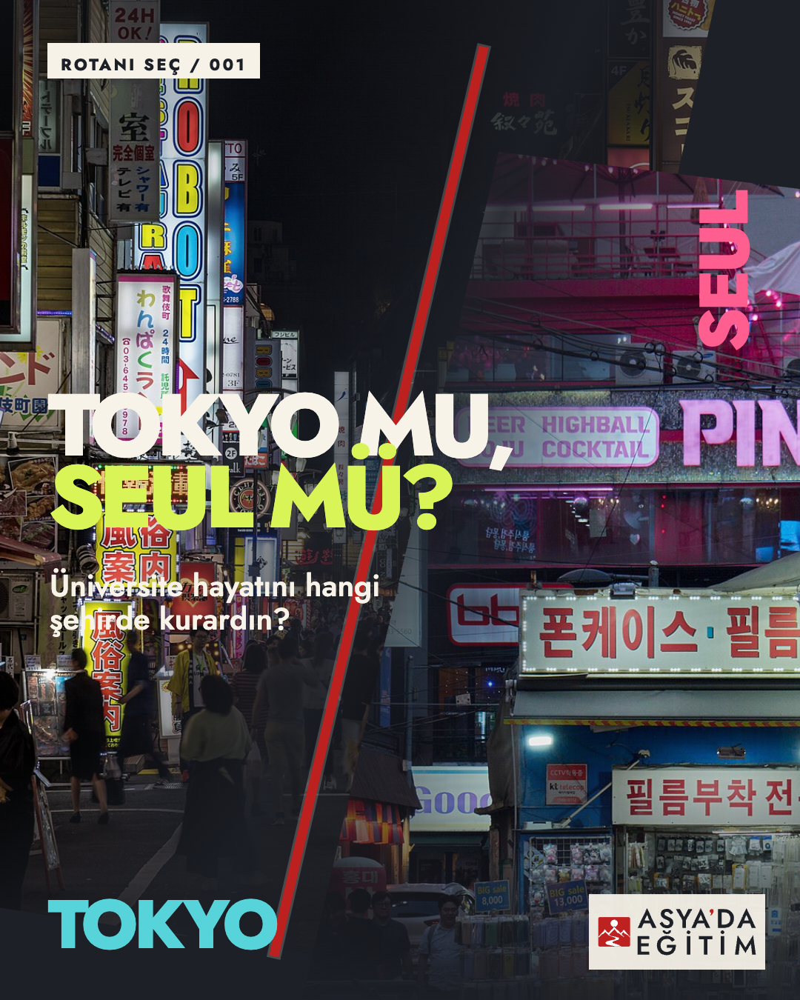
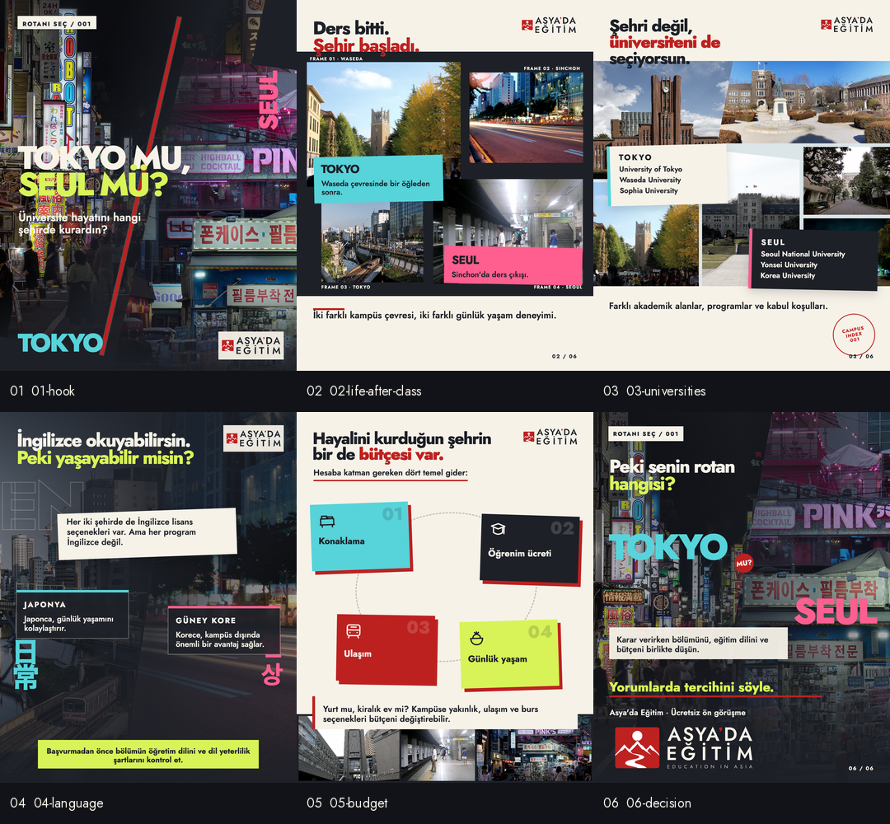

Rotanı Seç #001 V2 galerisini aç →
Ölçülen tipografi, geometri ve kontrast denetimi, Songdo kampüs coğrafyası, altı üniversite atlası ve konaklama bütçesi sayfası. Altı final PNG, mobil önizleme, contact sheet ve kaynak paketi.


01 / 061080 × 1350 · sRGB
01 — The Hook
Tokyo ve Seul gece enerjisinin asimetrik, sinematik karşılaşması.
Carousel + kaynak paketini indir ↓CONTACT SHEET
Altı farklı ritim, tek seri
Kapak ve final sinematik; 02 foto-essay; 03 akademik atlas; 04 dil arayüzü; 05 ikon-led bütçe sayfası.

375 PX REVIEW
Mobil okunabilirlik
Tüm final PNG’ler 375×469 önizleme boyutunda ayrıca kontrol edildi.
FILES & EVIDENCE
Kaynak, doğrulama ve atıf
Teslim manifestiExact-copyFotoğraf atıflarıKalite incelemesiFeed önizlemesiMobil şeritCaptionPlatform notları


Üniversite logoları kullanılmadı; hiçbir ortaklık veya onay ima edilmez. Orijinaller, tam kaynak sayfaları, yazarlar, lisanslar ve SHA-256 kayıtları pakette korunur.